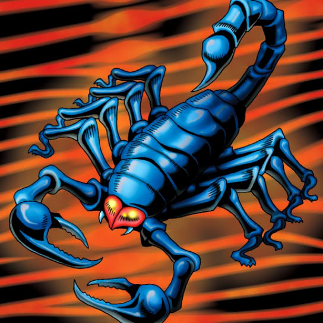

Steel Scorpion

STATS
ATK: 250
DEF: 300DECK COST
Deck Cost per Card: 6Fusion List (13 Possible Fusions)
- Steel Scorpion + Kagemusha of the Blue Flame = Cyber Soldier
- Steel Scorpion + Little Chimera = Giga-tech Wolf
- Steel Scorpion + Little D = Cyber Saurus
- Steel Scorpion + Milus Radiant = Giga-tech Wolf
- Steel Scorpion + Petit Dragon = Metal Dragon
- Steel Scorpion + Princess of Tsurugi = Cyber Soldier
- Steel Scorpion + Queen's Double = Cyber Soldier
- Steel Scorpion + Rare Fish = Metal Fish
- Steel Scorpion + Root Water = Misairuzame
- Steel Scorpion + Silver Fang = Dice Armadillo
- Steel Scorpion + Tomozaurus = Cyber Saurus
- Steel Scorpion + Two-Mouth Darkruler = Cyber Saurus
- Steel Scorpion + Wolf = Dice Armadillo